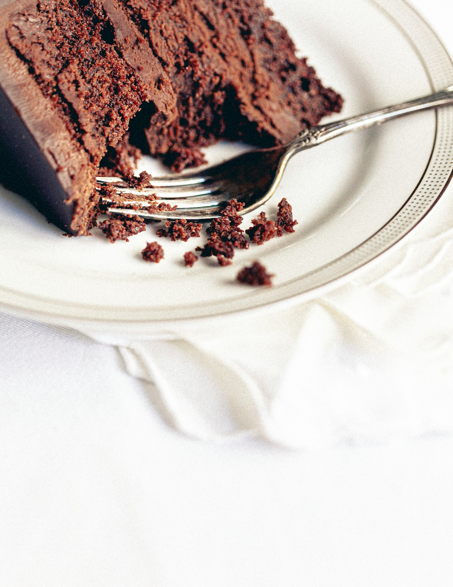

Home
Flourless Chocolate Cake

Description
A dense flourless chocolate cake that is rich, fudgy, and gluten-free.
The content included here has been adapted (or more accurately, copied)
from
allrecipes.com. The original recipe was submitted by Maggie. Check out
the original recipe on
the allrecipes website.
Image credit: Cristina Matos-Albers
Ingredients
- 3/4 cup white sugar
- 1/2 cup water
- 1/4 teaspoon salt
- 18 ounces of chocolate
- 1 cup unsalted butter
- 6 large eggs
-
Gather all ingredients. Preheat the oven to 300 degrees F (150 degrees
C). Grease a 10-inch round cake pan; set aside.
-
Combine sugar, water, and salt in a small saucepan over medium heat.
Stir until completely dissolved; set aside.
-
Melt bittersweet chocolate in a microwave-safe glass or ceramic bowl in
15-second intervals, stirring after each interval, 1 to 3 minutes. Pour
chocolate into the bowl of an electric mixer.
-
Cut butter into pieces; beat butter, one piece at a time, into chocolate
until combined.
- Beat in hot sugar water. Slowly beat in eggs, one at a time.
- Pour batter into the prepared cake pan.
-
Have a pan larger than the cake pan ready; put the cake pan in the
larger pan and fill the larger pan with boiling water halfway up the
sides of the cake pan.
-
Bake cake in the water bath in the preheated oven for 45 minutes. The
center will still look wet. Place cake in the refrigerator until
thoroughly chilled, 8 hours to overnight.
-
To unmold, dip the bottom of the cake pan in hot water for 10 seconds
and invert onto a serving plate.